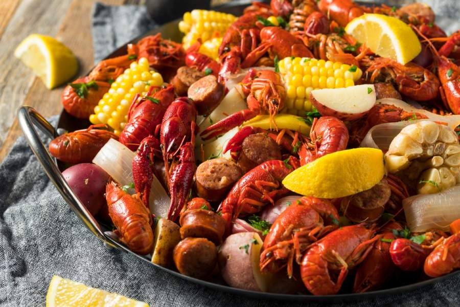
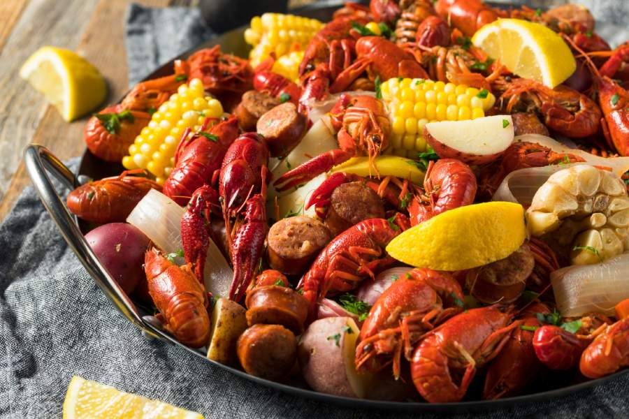

SEAFOODS
Welcome to our tantalizing journey through the briny depths of the culinary world, where every dish tells a tale of oceanic delights. Seafood, with its diverse array of flavors and textures, has long been cherished by food lovers worldwide. From the succulent sweetness of lobster to the delicate flakiness of grilled fish, each bite evokes a sense of maritime adventure. Join us as we dive into the rich bounty of the sea, exploring recipes, cooking techniques, and the cultural significance of seafood from coast to coast. Whether you’re a seasoned connoisseur or a curious newcomer, prepare to embark on a voyage of gastronomic discovery that will leave your taste buds yearning for more.
Personal Blog
 
